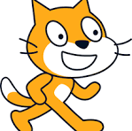

 Proyectos con Scratch II¶
Segundo Juego¶
Antes de proponer el segundo juego, vamos a ver cómo podemos hacer que el fondo se mueva continuamente, dando el efecto de que un personaje se mueve.
Primer paso: Diseño¶
Los fondos no pueden moverse, así que vamos a crear un objeto con el aspecto de fondo.
Debemos elegir un fondo que tenga un aspecto horizontal, en Scratch existen varios que pueden servirnos.
Lo vamos a abrir como escenario y vamos a editarlo pulsando en "Pinta" y lo copiamos pulsando el icono "Copiar".

Luego creamos un nuevo objeto eligiendo la opción "Pinta" del menú de objetos y pegamos dos veces el fondo pegado en el editor de disfraces mediante el icono "Pegar".
Intentamos que los dos fondos pegados coincidan exactamente para conseguir una continuidad del mismo.
Tenemos que conseguir que el fondo se desplace de derecha a izquierda y que cuando llegue al final, salte de nuevo al principio, consiguiendo de esta forma un fondo en movimiento continuo. El siguiente programa hace lo que buscamos:
Si ahora insertamos un personaje que parezca que camina al cambiar su disfraz, podemos conseguir un efecto muy realista.
El bloque "ir a capa [delantera]" hace que el personaje se mantenga por encima del fondo.
Actividad
AA3.2 Diseñando un juego¶
(C.ESP2 / CE2.2, CE2.3, CE2.4 / IC1-3p)
Abre Scratch y realiza las siguientes actividades escribiendo previamente los diagramas de flujo.
- Diseña un juego paso a paso en el que una nave se mueva por el espacio de izquierda a derecha (En realidad es el fondo el que se tiene que mover) y vaya disparando a objetos que aparezcan aleatoriamente desde la derecha de la pantalla y se acerquen a la misma.
- Realiza el movimiento del fondo.
- Haz que la nave se pueda desplazar de arriba a abajo con el ratón.
- Programa objetos que aparezcan por la parte derecha de la pantalla y se desplacen hacia la izquierda.
- La nave disparará hacia la derecha y podrá destruir los objetos que aparecen, aumentando la cuenta de puntos.
- Si un objeto toca la nave, se termina el juego.
Actividad
AA3.3 Actividad por parejas Tenis¶
(C.ESP2 / CE2.2, CE2.3, CE2.4 / IC1-3p)
Abre Scratch y realiza las siguientes actividades escribiendo previamente los diagramas de flujo.
1. Diseña un juego paso a paso en el que podáis jugar los dos a tenis. 2. Cada jugador tendrá unas teclas para manejar su raqueta y un marcador. 3. Si la bola toca uno de los fondos, el jugador contrario ganará un punto. 4. Gana el jugador que consiga antes diez puntos. 5. Una vez terminado, comparte tu juego para que el profesor pueda evaluarlo. 6. Se puntuará la originalidad, el aspecto estético, la jugabilidad y la dificultad.
Actividad
AA3.4 Actividad por parejas Loros¶
(C.ESP2 / CE2.2, CE2.3, CE2.4 / IC1-3p)
Abre Scratch y realiza el juego "LOROS ASESINOS" a partir de las siguientes imágenes.
Realiza la programación de uno de los loros y duplica el personaje, así se duplicará también su código.
Reduce el tamaño de los loros a 50 y el tamaño de la mariposa a 70.
En la web de Scratch hay multitud de juegos realizados por gente de todo el mundo, tan bien hechos como el siguiente:
Actividad
AA3.5 Actividad por pareja. Creación de un videojuego¶
(C.ESP2 / CE2.2, CE2.3, CE2.4 / IC1-3p)
Ya que conoces los distintos aspectos de un videojuego, es hora de que realices el tuyo propio
-
Diseña un juego paso a paso en el que haya movimiento e interacción entre personajes, movimientos, escenarios, interactividad, puntuación, etc.
-
Se puntuará la originalidad, el aspecto estético, la jugabilidad y la dificultad.
Página para aprender a programar con Scratch mediante retos: https://www.robotix.es/es/actividades-scratch